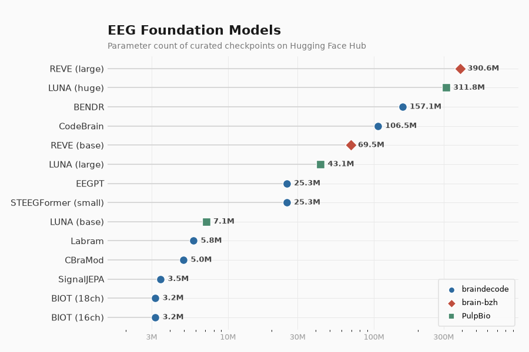

Note
Go to the end to download the full example code.
Loading and Adapting Pretrained Foundation Models#
 +
+
All braindecode models can load and save weights on the
Hugging Face Hub via
from_pretrained and push_to_hub. For foundation models
we additionally provide curated pretrained checkpoints with mapped
weights, so you can fine-tune them out of the box.
Important
The curation and standardization of the pretrained foundation model weights available on the Braindecode Hugging Face organization was carried out as part of the OpenEEG-Bench benchmark [2]. If you use these pretrained weights, please cite the paper.
pip install braindecode[hub]
This tutorial shows how to load pretrained EEG foundation models, adapt them to new tasks, extract features, and save/restore full model configurations, using a unified API inspired by the Hugging Face transformers library.
Loading a pretrained model#
All braindecode foundation models support the from_pretrained
method, which downloads model weights and configuration from the
Hugging Face Hub.
We start with BENDR [1] as an example:
from braindecode.models import BENDR
model = BENDR.from_pretrained("braindecode/braindecode-bendr", n_outputs=2)
print(f"Loaded BENDR with n_outputs={model.n_outputs}")
Loaded BENDR with n_outputs=2
The loaded model is ready for inference:
x = torch.randn(2, 20, 768) # (batch, n_chans, n_times)
model.eval()
with torch.no_grad():
out = model(x)
print(f"Output shape: {out.shape}")
Output shape: torch.Size([2, 2])
Adapting to a new task#
Changing the number of outputs#
When fine-tuning a pretrained model on a dataset with a different number
of classes, pass n_outputs directly to from_pretrained. The
backbone weights are loaded and the classification head is automatically
rebuilt:
model = BENDR.from_pretrained("braindecode/braindecode-bendr", n_outputs=4)
print(f"n_outputs after loading: {model.n_outputs}")
with torch.no_grad():
out = model(x)
print(f"Output shape with 4 classes: {out.shape}")
n_outputs after loading: 4
Output shape with 4 classes: torch.Size([2, 4])
You can also swap the head at any time using reset_head:
model.reset_head(10)
print(f"n_outputs after reset_head: {model.n_outputs}")
with torch.no_grad():
out = model(x)
print(f"Output shape after reset: {out.shape}")
n_outputs after reset_head: 10
Output shape after reset: torch.Size([2, 10])
Extracting features#
All foundation models support return_features=True in their
forward() method. This returns a dictionary with:
"features"– encoder embeddings before the classification head"cls_token"– the CLS token (if the model has one, otherwiseNone)
model.eval()
with torch.no_grad():
out = model(x, return_features=True)
print(f"Type: {type(out)}")
print(f"Features shape: {out['features'].shape}")
print(f"CLS token: {out['cls_token']}")
Type: <class 'dict'>
Features shape: torch.Size([2, 512])
CLS token: None
Tip
This is useful for transfer learning: freeze the backbone and train only a new head on the extracted features. See Fine-tuning a Foundation Model (Signal-JEPA) for a complete example.
Saving and restoring configurations#
get_config returns a JSON-serializable dictionary of all
__init__ parameters (not just the 6 EEG-specific ones). This
includes model-specific hyperparameters like encoder_h,
drop_prob, activation, etc.
config = model.get_config()
print(json.dumps({k: v for k, v in config.items() if k != "chs_info"}, indent=2))
{
"n_chans": 20,
"n_outputs": 2,
"n_times": 1000,
"input_window_seconds": null,
"sfreq": 250,
"encoder_h": 512,
"contextualizer_hidden": 3076,
"projection_head": false,
"drop_prob": 0.1,
"layer_drop": 0.0,
"activation": "torch.nn.modules.activation.GELU",
"transformer_layers": 8,
"transformer_heads": 8,
"position_encoder_length": 25,
"enc_width": [
3,
2,
2,
2,
2,
2
],
"enc_downsample": [
3,
2,
2,
2,
2,
2
],
"start_token": -5,
"final_layer": true,
"encoder_only": false
}
You can reconstruct the model (without weights) using from_config:
model_copy = BENDR.from_config(config)
print(f"Reconstructed: n_outputs={model_copy.n_outputs}")
Reconstructed: n_outputs=2
When pushing to the Hub, the full config is saved automatically in
config.json alongside the model weights:
model.push_to_hub("username/my-bendr-model")
# Later:
model = BENDR.from_pretrained("username/my-bendr-model")
Unified API across foundation models#
The same API works across all foundation models:
Model |
|
|
|
|
|---|---|---|---|---|
✔ |
✔ |
✔ |
✔ |
|
✔ |
✔ |
✔ |
✔ |
|
✔ |
✔ |
✔ |
✔ |
|
✔ |
✔ |
✔ |
✔ |
|
✔ |
✔ |
✔ |
✔ |
|
✔ |
✔ |
✔ (+ |
✔ |
|
✔ |
✔ |
✔ |
✔ |
|
✔ |
✔ |
✔ |
✔ |
|
|
✔ |
✔ |
✔ |
✔ |
The feature shapes differ between models (reflecting their architecture), but the API is always the same.
Available pretrained weights#
The figure below shows all available pretrained checkpoints ranked by parameter count, with colors indicating the hosting organization. Parameter counts are read directly from the Hub.
import matplotlib.pyplot as plt
import numpy as np
from braindecode.models import (
BENDR,
BIOT,
EEGPT,
LUNA,
REVE,
CBraMod,
CodeBrain,
Labram,
SignalJEPA,
)
# (display_name, model_class, from_pretrained kwargs, org)
checkpoints = [
(
"BENDR",
BENDR,
dict(
pretrained_model_name_or_path="braindecode/braindecode-bendr", n_outputs=2
),
"braindecode",
),
(
"BIOT (16ch)",
BIOT,
dict(pretrained_model_name_or_path="braindecode/biot-pretrained-prest-16chs"),
"braindecode",
),
(
"BIOT (18ch)",
BIOT,
dict(
pretrained_model_name_or_path="braindecode/biot-pretrained-shhs-prest-18chs"
),
"braindecode",
),
(
"CBraMod",
CBraMod,
dict(
pretrained_model_name_or_path="braindecode/cbramod-pretrained",
n_outputs=2,
n_chans=22,
n_times=1000,
sfreq=250,
),
"braindecode",
),
(
"CodeBrain",
CodeBrain,
dict(
pretrained_model_name_or_path="braindecode/codebrain-pretrained",
n_outputs=2,
),
"braindecode",
),
(
"EEGPT",
EEGPT,
dict(
pretrained_model_name_or_path="braindecode/eegpt-pretrained",
n_chans=62,
chan_proj_type="none",
),
"braindecode",
),
(
"Labram",
Labram,
dict(
pretrained_model_name_or_path="braindecode/labram-pretrained", n_chans=128
),
"braindecode",
),
(
"SignalJEPA",
SignalJEPA,
dict(pretrained_model_name_or_path="braindecode/signal-jepa"),
"braindecode",
),
(
"REVE (base)",
REVE,
dict(
pretrained_model_name_or_path="brain-bzh/reve-base",
n_outputs=2,
n_chans=64,
n_times=512,
sfreq=256,
),
"brain-bzh",
),
(
"REVE (large)",
REVE,
dict(
pretrained_model_name_or_path="brain-bzh/reve-large",
n_outputs=2,
n_chans=64,
n_times=512,
sfreq=256,
),
"brain-bzh",
),
(
"LUNA (base)",
LUNA,
dict(
pretrained_model_name_or_path="PulpBio/LUNA",
filename="LUNA_base.safetensors",
n_outputs=2,
n_chans=22,
n_times=1000,
embed_dim=64,
num_queries=4,
depth=8,
),
"PulpBio",
),
(
"LUNA (large)",
LUNA,
dict(
pretrained_model_name_or_path="PulpBio/LUNA",
filename="LUNA_large.safetensors",
n_outputs=2,
n_chans=22,
n_times=1000,
embed_dim=96,
num_queries=6,
depth=10,
),
"PulpBio",
),
(
"LUNA (huge)",
LUNA,
dict(
pretrained_model_name_or_path="PulpBio/LUNA",
filename="LUNA_huge.safetensors",
n_outputs=2,
n_chans=22,
n_times=1000,
embed_dim=128,
num_queries=8,
depth=24,
),
"PulpBio",
),
]
# Skip gated models when no HF token is available (e.g. fork PRs)
if not hf_token:
checkpoints = [(d, c, k, o) for d, c, k, o in checkpoints if o != "brain-bzh"]
names, params_m, orgs = [], [], []
for display, cls, kwargs, org in checkpoints:
mdl = cls.from_pretrained(**kwargs)
n_params = sum(
p.numel()
for p in mdl.parameters()
if not isinstance(p, torch.nn.UninitializedParameter)
)
names.append(display)
params_m.append(n_params / 1e6)
orgs.append(org)
print(f" {display:15s} {n_params / 1e6:8.1f}M params")
params_m = np.array(params_m)
# Sort by parameter count (ascending) for horizontal bar chart
order = np.argsort(params_m)
names = [names[i] for i in order]
params_m = params_m[order]
orgs = [orgs[i] for i in order]
from matplotlib.ticker import FuncFormatter
# -- palette ----------------------------------------------------------
org_palette = {
"braindecode": "#2D6A9F",
"brain-bzh": "#C04E3E",
"PulpBio": "#4A8B6F",
}
org_markers = {"braindecode": "o", "brain-bzh": "D", "PulpBio": "s"}
colors = [org_palette[o] for o in orgs]
markers = [org_markers[o] for o in orgs]
# -- figure setup ------------------------------------------------------
fig, ax = plt.subplots(figsize=(7.5, 5.0), dpi=120)
fig.patch.set_facecolor("#FAFAFA")
ax.set_facecolor("#FAFAFA")
y_pos = np.arange(len(names))
# Horizontal reference lines (subtle, behind everything)
for y in y_pos:
ax.axhline(y, color="#E8E8E8", linewidth=0.6, zorder=0)
# Stem lines from left edge to dot
ax.hlines(y_pos, 0.5, params_m, color="#D0D0D0", linewidth=0.9, zorder=1)
# Dots (different shapes per org for accessibility)
for i in range(len(names)):
ax.scatter(
params_m[i],
y_pos[i],
color=colors[i],
s=70,
zorder=3,
marker=markers[i],
edgecolors="white",
linewidths=0.8,
)
# Value labels always to the right of the dot
for i, pm in enumerate(params_m):
ax.text(
pm * 1.12,
y_pos[i],
f"{pm:.1f}M",
ha="left",
va="center",
fontsize=7.8,
color="#444444",
fontweight="bold",
zorder=4,
)
# Y-axis
ax.set_yticks(y_pos)
ax.set_yticklabels(names, fontsize=9, color="#333333", fontweight="medium")
# X-axis: log scale with human-readable labels
ax.set_xscale("log")
ax.set_xlim(1.5, params_m.max() * 2.5)
ax.xaxis.set_major_formatter(FuncFormatter(lambda x, _: f"{x:.0f}M"))
ax.set_xticks([3, 10, 30, 100, 300])
ax.tick_params(axis="x", colors="#999999", labelsize=8, length=0, pad=4)
ax.tick_params(axis="y", length=0)
# Title + subtitle
ax.set_title(
"EEG Foundation Models",
fontsize=13,
fontweight="bold",
color="#1a1a1a",
loc="left",
pad=22,
)
ax.text(
0.0,
1.02,
"Parameter count of curated checkpoints on Hugging Face Hub",
transform=ax.transAxes,
fontsize=8.5,
color="#777777",
va="bottom",
)
# Organization legend with shape + color
for org_name in org_palette:
ax.scatter(
[],
[],
c=org_palette[org_name],
s=40,
marker=org_markers[org_name],
label=org_name,
edgecolors="white",
)
legend = ax.legend(
fontsize=7.5,
loc="lower right",
frameon=True,
framealpha=0.95,
edgecolor="#E0E0E0",
handletextpad=0.4,
borderpad=0.8,
labelspacing=0.7,
)
legend.get_frame().set_facecolor("#FAFAFA")
# Clean spines
for spine in ax.spines.values():
spine.set_visible(False)
# Minimal grid on x only
ax.xaxis.grid(True, color="#E8E8E8", linewidth=0.5, which="major")
ax.yaxis.grid(False)
ax.set_axisbelow(True)
fig.tight_layout(rect=[0, 0, 1, 0.96])
plt.show()

BENDR 157.1M params
BIOT (16ch) 3.2M params
BIOT (18ch) 3.2M params
CBraMod 5.0M params
CodeBrain 106.5M params
EEGPT 25.3M params
Labram 5.8M params
SignalJEPA 3.5M params
REVE (base) 69.5M params
REVE (large) 390.6M params
LUNA (base) 7.1M params
LUNA (large) 43.1M params
LUNA (huge) 311.8M params
Braindecode organization#
The braindecode organization on Hugging Face re-hosts the official pretrained weights. All models below follow the same one-line loading pattern:
model = Model.from_pretrained("<repo-id>", n_outputs=...)
Model |
Hub Repository |
Details |
|---|---|---|
|
20 channels |
|
|
16 ch, PREST |
|
|
18 ch, SHHS + PREST |
|
|
18 ch, 6 datasets |
|
|
channel-agnostic |
|
|
19 ch, 10-20, 200 Hz, TUEG |
|
|
62 ch, 250 Hz |
|
|
128 channels |
|
|
|
62 channels + pre-trained channel embedding |
|
|
arbitrary channel set (embedding stripped) |
External organizations#
Some pretrained weights are hosted by the original model authors:
Model |
Organization |
Hub Repository |
Details |
|---|---|---|---|
|
69M params |
||
|
400M params |
||
|
base / large / huge |
Note
Loading LUNA: This repo stores multiple weight variants in a
single repository. Use the filename parameter to select one:
Available files: LUNA_base.safetensors (7M),
LUNA_large.safetensors (43M), LUNA_huge.safetensors (311M).
References#
Total running time of the script: (0 minutes 58.635 seconds)
Estimated memory usage: 4800 MB
Run this example